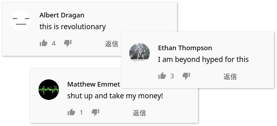

AJT JP1K Anki deck
Recently Refold proposed a new method of studying kanji aimed at complete beginners who don't want to go through RTK. If you want to learn more about the method from its author, watch this video.
WARNING: The resources above may contain links to software that AJT considers to be malicious. We recommend making use of their language learning ideas but disregarding their software recommendations.
In this article I'm going to be explaining the method and the new Anki deck I made which I call AJT JP1K.
Kanji fluency
When you first start learning kanji they often look the same. This makes remembering most of them difficult unless you know the right method to do it efficiently.
Between being a newcomer and totally fluent there's a spot in the middle when kanji stop being foreign anymore. Once you are at this point you don't know every kanji but they start to look like something to you, you start distinguishing them easily from each other, and learning new kanji becomes effortless. This point is sometimes called kanji fluency.
When you have kanji fluency recognizing kanji becomes a lot like recognizing a face. You just look at a person and immediately know if you've met them before, even if you might forget their name. With kanji you're not analyzing the component parts but taking the whole character as one unit.
Reaching the point of being able to immediately recognize any kanji like that makes the process of learning kanji and learning words completely synonymous. You don't have to study individual kanji at all, instead all you have to do to learn a new kanji is to learn words that use it.
Methods of learning kanji
There are two most common ways to learn kanji.
Isolated kanji study
You learn kanji by breaking them up into their components and viewing each kanji as a combination of its parts. The method uses short stories or images called mnemonics. Each story ties the components together to make kanji easy to remember. You memorize 1000-2000 characters this way and then you end up naturally reaching the point of kanji fluency.
Examples:
The downside is that although this method makes it easier to remember words later on while doing it you invest months into memorizing English keywords which have nothing to do with Japanese instead of learning words and getting better at understanding the real language. Kanjidamage gives you a little more benefit by incorporating the main reading of each kanji into the mnemonic story but you still need to take the time.
Kanji through vocabulary
You choose not to study kanji in isolation, instead you learn vocabulary from the beginning. For each word you memorize how it's read and what it means. If a word is written in kanji you memorize it like a picture without looking at its individual components. Over time as you keep learning words you unconsciously get better at recognizing the kanji which leads to eventually achieving the kanji fluency.
The downside is that it is not easy. You have to somehow force the words into your brain and there are no mental anchors to help you.
JP1K method
Either method discussed above will result in success so long as you persist, so the choice comes down to what you personally like more. The new method of learning kanji is intended to be a kind of compromise between these two.

To execute it you need an Anki deck formatted in a specific way. On the front of each card you have a word, phrase or sentence in Japanese language written in full kanji and without furigana but if you hover over it then the furigana readings will appear. On the back you have everything necessary to understand the flashcard, which may include English translations, dictionary definitions and native audio.
The important part is how you review the deck:
- A flashcard comes up, furigana is hidden.
- Read the target word, or the whole sentence if you want.
- If the word contains kanji try to recall its reading. Then hover over the word to make the furigana pop up and see if you've recalled the reading correctly.
- Try to recall the meaning of the target word. It doesn't need to be precise.
- Reveal the back side of the card and see if the meaning was correct.
- When grading yourself, pass the card if you understand the meaning. Whether you remembered the reading or not doesn't matter. Avoid "Hard" and "Easy" buttons.
This way when you review a card you may completely forget the reading, but then if you get the meaning right you still pass the card.
The idea here is that this will make the process of going through the deck much more enjoyable because all you have to do is remember the meaning to pass the card. It's not that hard. Another benefit is that you're going to start noticing the new words you've learned in your immersion. But because every time you're still trying to recall the reading it should be enough to eventually achieve kanji fluency. On the other hand, if all cards had readings on the front then there would be no deliberate practice involved so you'd eventually start ignoring the kanji.
The deck
I am proud to announce the release of Ajatt-Tools JP1K: an Anki Deck for Japanese learners designed to teach how to recognize Kanji along with the most common 1000 words used in everyday conversations.
The deck is intended for beginners. Prior knowledge of kana is required but there is no need to do any isolated kanji study.
If you have already gone through RTK and know more than 1000 words, you are unlikely to benefit from the deck. But if your vocabulary is below 1000 words, I recommend that you give the JP1K a try over studying kanji in isolation and premade decks like Core or Tango.
The deck is based on Ankidrone Starter Pack and contains words commonly used in everyday life in Japan. Cards are presented relatively in the 1T (i+1) order. Each word along with each sentence has native audio and an English translation.
The card template used is TSC, which means that the target word is highlighted and you decide if you want to read the whole sentence or not.

An example TSC from JP1K
If you're going to read the full sentence every time you rep a card, prior knowledge of some grammar might be necessary, in which case refer to Tae Kim guide. The deck explains certain grammar points and particles but it is not enough to replace a proper grammar guide.
If a word is written in kanji you can view the furigana reading by hovering over it with your mouse.
WCCs deck
Some people might prefer WCCs over TSCs, so I've prepared another version.

An example card from the JP1K WCC deck
It is available to all patrons. To get the deck follow the link below.
Q&A
Q: The deck contains some words that I don't think will be useful for me.
A: The main source of words in the deck is a book called 1000 Essential Vocabulary for the JLPT N5. It contains a number of pretty obvious katakana words and a short list of country names. If you don't want to learn them, press
@to suspend such cards.Q: I have poor retention.
A: This is natural if you're a beginner and your brain isn't used to memorizing Japanese yet. At first some words just won't stick, in which case try getting more immersion. The words and phrases in the deck are very common and you'll be hearing them more frequently. If you find yourself failing cards over and over, install Mortician and it will bury them for you automatically. Usually the buried words become easier after you get some rest. If not, suspend the cards.
Q: Sometimes I forget the meaning of the target word but still remember the meaning of the whole sentence, therefore I can infer the meaning of the target word. Is it alright to do that?
A: Yes. Sentence cards tend to form context-dependent memories, but eventually knowledge transfers from being context-dependent to context-independent.
Q: What to do next?
A: If you try the deck out, please put any feedback or corrections you have in the chat.
After you complete the deck, you are free to start mining sentences on your own. If you still need a sentence pack to help you out, refer to basic vocab.
Convert any deck to the new format
If you don't like this deck, the good news is that making your own JP1K-style deck is very easy. All you need to do is take any premade deck and change the card template a bit.
First, open the Card Types settings and find where the target word or sentence is placed.
<div>{{Word}}</div>
Then replace {{Word}} with the corresponding field that contains furigana
and add furigana: before its name to tell Anki
that the field should be rendered with readings shown above the kanji.
<div>{{furigana:WordFurigana}}</div>
Now to make the furigana hidden by default add a class name or id to the tag around the target word. This class name will be used shortly to refer to the tag.
<div class="question">{{furigana:WordFurigana}}</div>
Finally, you need a css rule that tells Anki to keep the furigana hidden by default, and a second rule that tells to make it visible on hover.
.question ruby rt { visibility: hidden; }
.question ruby:hover rt { visibility: visible; }
This should be it. Enjoy your own JP1K deck.